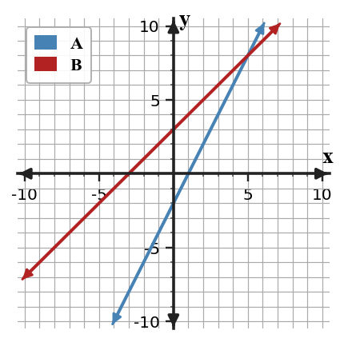

Algebra Check Your Understanding 2.4
1. Compare $y=2x+5$ and $y=3x+1$: which grows faster?
2. B is $y=3x+5$. Compare starting values.
| x | A |
|---|---|
| 0 | 2 |
| 1 | 6 |
| 2 | 10 |
3. Which line has the greater y-intercept?

4. A starts at 10 with rate 2; B starts at 4 with rate 5. Which starts higher and which grows faster?
5. Critique: “Same slope means same line.”
6. Critique: “One shared point proves two linear relationships are identical.”